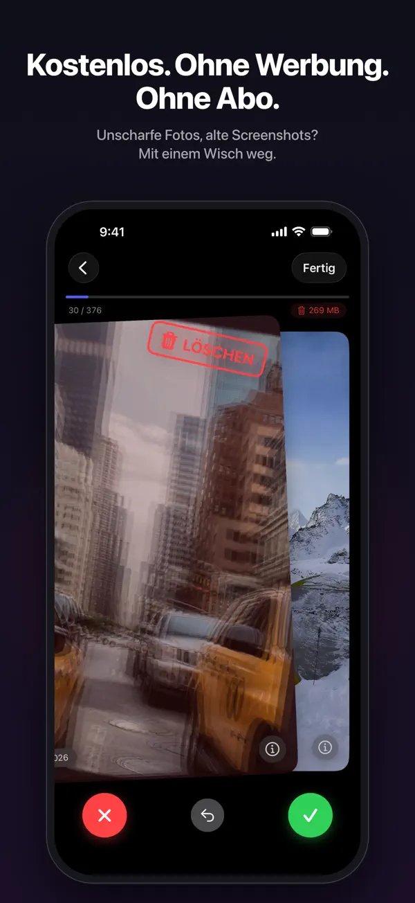
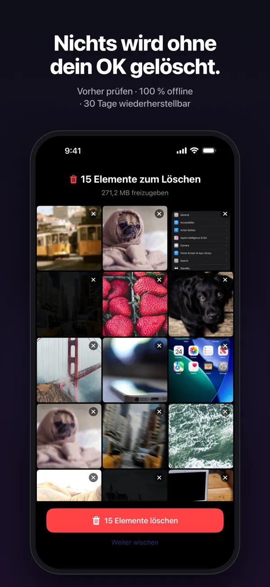

Wisch dich durch deine Fotos.
Mach dein iPhone frei.
Links löschen, rechts behalten. Kostenlos, ohne Werbung, ohne Abo, und deine Fotos bleiben auf deinem Handy.
Laden im App Store



Links löschen, rechts behalten. Kostenlos, ohne Werbung, ohne Abo, und deine Fotos bleiben auf deinem Handy.
Laden im App Store

